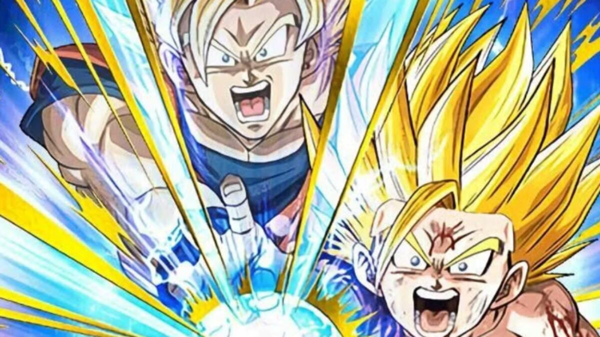

Videojuegos
Dragon Ball: Sparking! Zero llegará a Nintendo Switch 2 muy pronto... ¡y también a Switch 1! verstappen es gei

Actualidad
Dragon Ball Sparking! Zero apunta a Nintendo Switch 2 y ya ha sido clasificado por edades

Actualidad
Goku y su fusión con Gohan es una realidad gracias a un mod en Dragon Ball Sparking! Zero

Actualidad
Los mejores personajes de Dragon Ball Sparking Zero! ordenados de mejor a peor: ¿Vegetto o Gogeta?

Actualidad
INDIKA llega a Nintendo Switch

Actualidad
Es uno de los indies mas raros que puedes jugar y acaba de confirmar su fecha para Nintendo Switch

Actualidad
Analisis: I N D I K A

Actualidad
Indika - Marketing engañoso y pretensión vacía

Actualidad
Kirby Air Riders arranca su prueba gratuita por tiempo limitado en Nintendo Switch 2

Videojuegos
Lanzamientos de videojuegos para noviembre para PlayStation, Xbox, PC (Steam) y Nintendo Switch

Imagenes
Kirby Air Riders desata su diversión y adrenalina en sus primeras imágenes oficiales

Videojuegos
Un emocionado Sakurai presenta al mundo su gran apuesta para Switch 2 con Kirby Air Riders

Actualidad
S.T.A.L.K.E.R. 2: Heart of Chornobyl saldrá en PS5, sí, pero no vendrá completo en el disco

Actualidad
Stalker 2 ha sido anunciado para PS5 y no tendrás que esperar demasiado para jugarlo

Actualidad
Los mejores shooters, FPS y TPS de 2024 en PS4, PS5, Xbox, Nintendo Switch y PC

Actualidad
El peligro de desarrollar un juego durante una guerra: “Estábamos listos para morir”